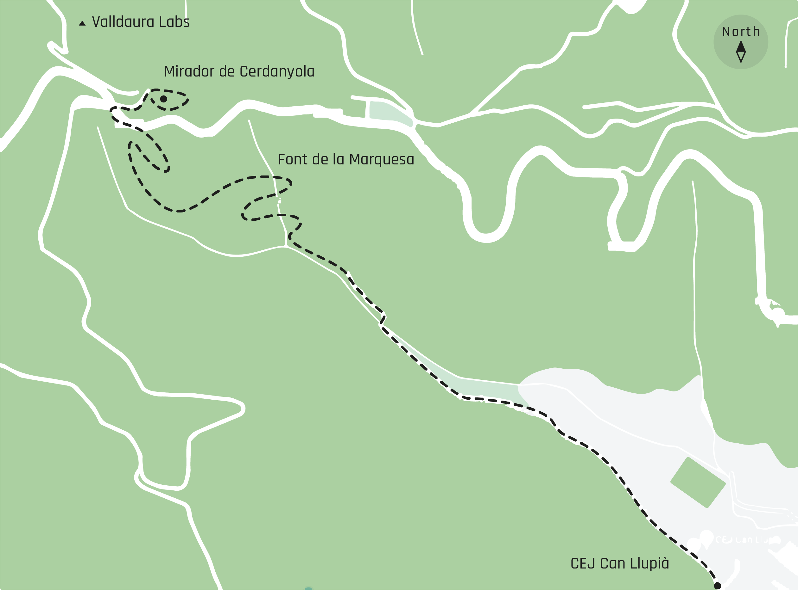

Design studio 1
Deliverable:
Post with the updated multiscalar design space.
Task: Perform an design experiment applying one or different roles of prototyping.
Goals:
- • Mapping my 'new self' and 'new workspace'. 👦
- • -----------------------------------------------------------------------------------------
- • Getting to know my physical surroundings better from a observative perspective.🔍
- • Learning more about the iNaturalist platform and connect with its community.
Last summer🌞 I exchanged the surroundings from my job in Joure and hometown Rouveen in the Netherlands for a apartment inside the house of a Argentinian lady in La Teixonera in Barcelona. As a way to map the changes that this international/cultural/professional transition included this page illustrates the things I left back in my previous reality and the things I surround myself in my current reality.🔮
I spent my Sundaymorning walking to the edge of the city, close to the starting point from where we walked to the Torre Vigia Monbau 🌄 about two weeks ago.
My objective for the day was to hike uphill to Mirador de Cerdanyola and capture and geo-tag as many interesting pictures of plants and/or animals as I could. This data I could later upload on the iNaturalist platform to get feedback and learn more about this system.
In total the trip took me a bit more than two hours. My first intention was to do a little roundtrip since my objective would not change on the way back. So as I got near to the 'Mirador' I started looking for alternative paths back but there were none.
The only option was to take the same way back and it suprised me to see how I could miss a lot of interesting things (plants, viewpoints, structures) despite trying to be receptive to these signals.
Ultimately I got back to the parking lot next to the building where I started, which turned out to be a prison. Training perceptional skills was nice to do and it felt as being a step closer to the First Person Perspective (1PP) I would want to work in.
Links:
iNaturalist
By Ruben de Haan on October 24th, 2021

